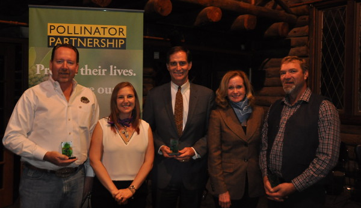

North American Pollinator Protection Campaign
NAPPC
NAPPC 2016 Conference Recap
This year's North American Pollinator Protection Campaign (NAPPC) Conference, hosted at the USDA APHIS, was a huge success with more first-time participants than ever before. The Pollinator Partnership and NAPPC Team works tirelessly to bring partners of all backgrounds together, without judgement or bias, for one important goal – to help the pollinators.
This event included wonderful, world class presentations from leaders at the forefront of pollinator issues. Topics ranged from government agency updates, honey bees, wildlife habitat and corporate partnerships. Speakers included:
Kevin Shea, USDA APHIS Administrator
Dr. Bruce Rodan, White House Office of Science and Technology Policy
Dr. David Inouye, Rocky Mountain Biological Laboratory
Drs. Diana Cox-Foster / James Strange, USDA ARS
Steve Hilburger (for Anne Kinsinger), USGS
Dr. Dennis vanEngelsdorp, Bee Informed Partnership
Rick Keigwin, US EPA
Chris Hiatt, American Honey Producers Association
Dr. Jonathan Mawdsley, Association for Fish and Wildlife Agencies
Dr. Gloria DeGrandi-Hoffman, USDA ARS Thelma Redick, Wildlife Habitat Council
Additionally, NAPPC convened 9 task forces who aim to establish year-long objectives surrounding a certain pollinator issue. One task force is working to engage urban youth to establish rooftop gardens. The Bee Friendly Farming task force is building on an existing project that establishes pollinator-friendly criteria for farmers. Another focuses on honey bee health, creating an RFP with relevant priority areas for scientific grants. Current grantees gave updates on their honey bee health research on the following topics:
Honey Bee Health Updates
Effects of Phytochemicals on longevity and pathogen resistance in honeybees
Changing perspectives: How pollinator community context influences honey bee virus prevalence
Testing the effects of nicotine, a natural plant metabolite found in nectar, on honey bee nosemosis
Focused virological analysis of the Arnot Forest survivor bee population for evidence of protective Deformed Wing Virus genotypes
Development of novel Nosema infection assays for diagnostics
Investigating a new way to combat viruses with RNA-targeting biotechnology in Apis mellifera
2016 Pollinator Award Winners
NAPPC also presented 5 awards to pollinator advocates and farmer ranchers who have worked for years to promote pollinators. These awardees understand just how important pollinators are to food, culture, and life. They have taken that extra step to help out the birds, bees, butterflies, moths, and bats that support agriculture and ecosystems everywhere. NAPPC, through its recognition and appreciation of these individuals, encourages their activities and hopes to catalyze future actions on behalf of pollinators.
-
Dan Ashe - US Fish and Wildlife Service
The winner of this year’s U.S. Pollinator Advocate Award is Dan Ashe. Dan is the 16th Director of the U.S. Fish and Wildlife Service. He has been instrumental in the Save the Monarchs campaign, and has supported partnership-driven, landscape-scale m onarch conservation projects. Thanks to Dan’s leadership, the US Fish and Wildlife Service will double the acres of restored or enhanced habitat for monarchs and other pollinators by September 30, 2017.
-
Bob McLean - Canadian Wildlife Services
The winner of this year’s Canadian Pollinator Advocate Award is Robert McLean, Executive Director of the Canadian Wildlife Service. For the last 35 years, Bob has been a leader in biodiversity conservation in North America – from the establishment of new National Wildlife Areas, to development of legislation to prevent international trafficking in endangered species, to the creation of the Habitat Stewardship Program and the Ecological Gifts program.
-
Alejandro del Mazo Maza - CONANP
The winner of this year’s Mexican Pollinator Advocate Award is Alejandro Del Mazo Maza, the National Commissioner for Natural Protected Areas at the National Commission of Protected Natural Areas (Comisión Nacional de Áreas Naturales Protegidas, or CONANP). CONANP recognizes the foundational role pollinators play in both the natural and developed world. Under Alejandro’s confident direction, CONANP has made significant steps in pollinator protection and set the pace for the whole country to follow.
-
Lakhy Sran - Sran Family Orchards
The winner of this year’s U.S. Farmer-Rancher Award is Lakhy Sran. Lakhy is a partner and second-generation grower at Sran Family Orchards. Located in Kerman, California, Sran Family Orchards is the largest grower of organic almonds. Under Lakhy’s direction, Sran Family Orchards has been a leader in sustainability and bee friendly farming practices. Here to accept the award on Lakhy’s behalf is Jason Hickman, Grower Relations at Sran Family Orchards.
-
Marc and Chantal Bercier - Ferme Agriber Inc.
The winners of this year’s Canadian Farmer-Rancher Award are Marc and Chantal Bercier. Along with their son Guillaume, Marc and Chantal operate a respected seed cleaning company and farm. They work to pioneer sustainable farming practices and show other farmers how restoring natural buffer zones can benefit both wildlife and the land.